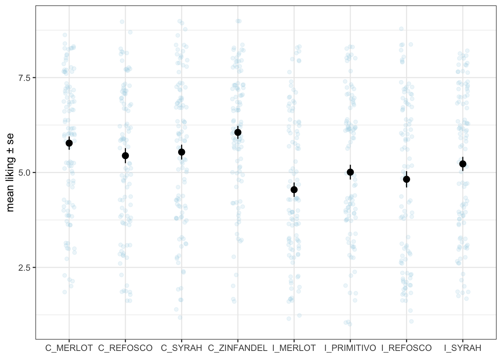
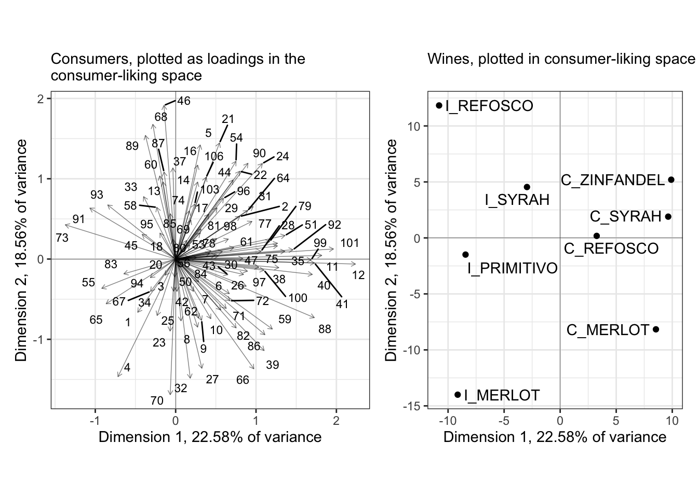
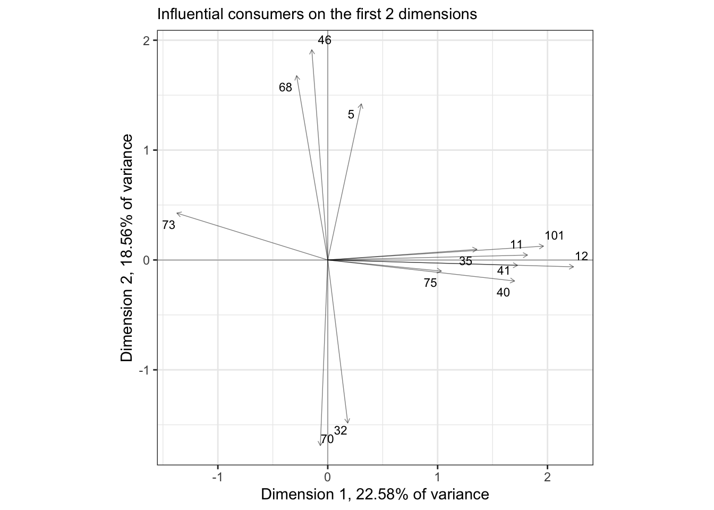
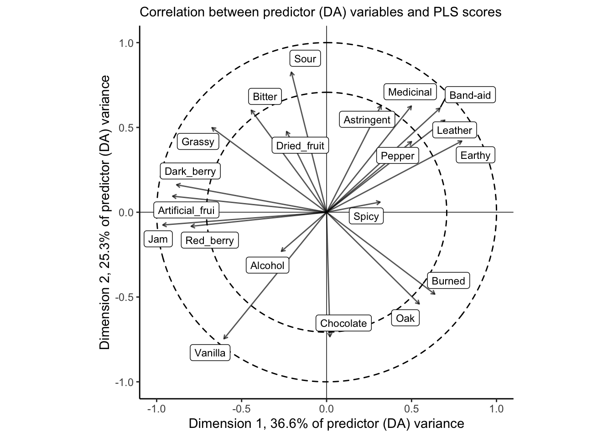
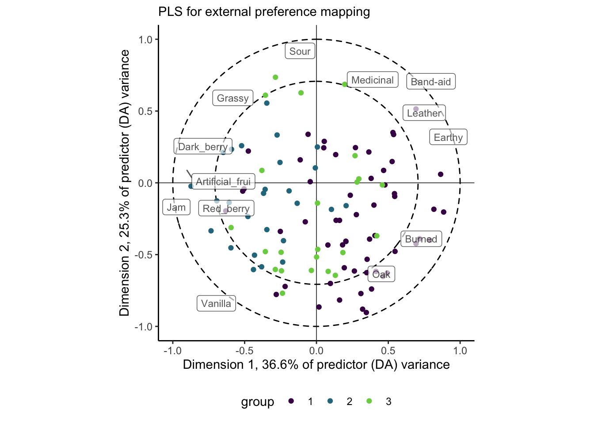

Chapter 11 Preference Mapping
In general, preference mapping is the name for a broad set of methods that attempts to produce cartesian representations of consumer preferences for a set of products. External preference mapping uses some sort of other data (the “external” data)–chemical data, DA data, even product-ingredient data–to explain patterns in consumer liking. Internal preference mapping treats consumers themselves as variables explaining the products, and uses simple approaches like PCA to produce a low-dimensional but hopefully informative insight into the patterns of consumer liking.
One of the challenges of preference mapping is the seemingly endless set of options for performing it. As reviewed by Yenket, Chambers IV, and Adhikari (2011), there are at least 10 distinct approaches to external preference mapping, possibly even more. They each solve slightly different optimization problems, and so produce slightly different results. Therefore, there is a real danger of an analyst going method-by-method until they find one that supports their prior intuition.
On top of that, I personally find that many of the approaches are technically and analytically convoluted and difficult to follow, producing outputs that are prone to misinterpretation. Therefore, in this section we’re going to depart pretty strongly from HGH’s approach: we’re going to entirely ignore SensoMineR::carto() and the related workflow, because I find the method itself opaque and the outputs less-than-useful. Instead, we’re going to focus on (what I believe to be) the simplest tractable tools for these use cases.
11.1 Data
To do preference mapping, we of course need some consumer data. We have data on consumer responses to the wines profiled in our DA example in the torriconsFinal.csv file. Let’s load our standard packages and import the data.
library(tidyverse)
library(here)
consumer_data <-read_csv(here("data/torriconsFinal.csv"))
# We'll also need the DA data
descriptive_data <- read_csv(here("data/torriDAFinal.csv")) %>%
mutate_at(.vars = vars(1:3), ~as.factor(.))
# And finally let's take a look at our data
skimr::skim(consumer_data) %>%
# This is purely to allow the skimr::skim() to be rendered in PDF, ignore otherwise
knitr::kable()| skim_type | skim_variable | n_missing | complete_rate | numeric.mean | numeric.sd | numeric.p0 | numeric.p25 | numeric.p50 | numeric.p75 | numeric.p100 | numeric.hist |
|---|---|---|---|---|---|---|---|---|---|---|---|
| numeric | Judge | 0 | 1 | 53.500000 | 30.7435630 | 1 | 27.25 | 53.5 | 79.75 | 106 | ▇▇▇▇▇ |
| numeric | Wine Frequency | 0 | 1 | 2.018868 | 0.8942263 | 1 | 1.00 | 2.0 | 3.00 | 4 | ▇▇▁▅▁ |
| numeric | IT frequency | 0 | 1 | 2.745283 | 0.7179511 | 1 | 2.00 | 3.0 | 3.00 | 5 | ▁▅▇▁▁ |
| numeric | Gender | 0 | 1 | 1.481132 | 0.5020175 | 1 | 1.00 | 1.0 | 2.00 | 2 | ▇▁▁▁▇ |
| numeric | Age | 0 | 1 | 38.915094 | 14.4684339 | 21 | 26.00 | 35.0 | 51.50 | 67 | ▇▃▂▃▃ |
| numeric | C_MERLOT | 0 | 1 | 5.773585 | 1.8009681 | 2 | 4.00 | 6.0 | 7.00 | 9 | ▃▃▇▅▅ |
| numeric | C_SYRAH | 0 | 1 | 5.537736 | 2.0150601 | 1 | 4.00 | 6.0 | 7.00 | 9 | ▂▆▂▇▅ |
| numeric | C_ZINFANDEL | 0 | 1 | 6.056604 | 1.7611154 | 1 | 5.00 | 6.0 | 7.00 | 9 | ▁▂▂▇▃ |
| numeric | C_REFOSCO | 0 | 1 | 5.443396 | 2.0427814 | 1 | 4.00 | 6.0 | 7.00 | 9 | ▂▆▃▇▃ |
| numeric | I_MERLOT | 0 | 1 | 4.547170 | 1.9475605 | 1 | 3.00 | 4.0 | 6.00 | 8 | ▅▅▇▅▅ |
| numeric | I_SYRAH | 0 | 1 | 5.226415 | 1.9187447 | 1 | 4.00 | 6.0 | 7.00 | 8 | ▂▃▆▅▇ |
| numeric | I_PRIMITIVO | 0 | 1 | 5.009434 | 2.0023571 | 1 | 4.00 | 5.0 | 6.75 | 9 | ▂▇▂▇▂ |
| numeric | I_REFOSCO | 0 | 1 | 4.820755 | 2.2116452 | 1 | 3.00 | 5.0 | 7.00 | 9 | ▅▅▂▇▂ |
So we have a lot of rows, each one of which represents a judge. In fact, we have two kinds of data in this wide data frame: data about consumer preferences (titled with wine names, like I_SYRAH) and data about the judges themselves (Wine Frequency, Age, etc). Let’s break these up for ease of use.
consumer_demo <-
consumer_data %>%
select(Judge:Age) %>%
# Everything but Age is a factor anyway, let's fix it
mutate(across(-Age, ~as.factor(.)))
consumer_data <-
consumer_data %>%
select(Judge, C_MERLOT:I_REFOSCO) %>%
mutate(Judge = as.factor(Judge))OK, now we’re ready to start working! Before we do, let’s do a little summary work to get some insight into the data. We might be curious, for example, to get some kind of \(mean±se\) estimate for our liking for each wine. Easy enough to do with what we’ve learned so far:
consumer_data %>%
pivot_longer(-Judge) %>%
ggplot(aes(x = name, y = value)) +
geom_jitter(alpha = 1/5, width = 0.1, color = "lightblue") +
stat_summary() +
theme_bw() +
labs(x = NULL, y = "mean liking ± se") +
scale_y_continuous(limits = c(1, 9))## Warning: Removed 22 rows containing missing values (`geom_point()`).
See how I scaled that to include the entire range of possible responses on the 9-pt scale? It shows how little variability there actually is in our data.
Anyway, we can see that on average the Californian wines seem to be rated a bit higher in terms of overall liking. If we were interested we might consider pairing the wine types across region (in this case, we would assume Zinfandel and Primitivo are chosen to be matches for each other) and treat this as a 2-factor design. But that is outside our remit at the moment.
11.2 Internal preference mapping
We’ll start out nice and easy with an internal preference map. In this approach, we treat each consumer as a variable measured on the wine, and we look for combinations of variables that best explain the variation in the wines. Sound familiar? We’re just describing a (covariance) PCA on the consumer data! Let’s dive in.
First, we need to transpose our table so that judges are the variables and wines are the observations:
internal_map <-
consumer_data %>%
column_to_rownames("Judge") %>%
# Pretty easy - `t()` is the base-`R` transpose function
t() %>%
FactoMineR::PCA(graph = FALSE, scale.unit = FALSE)Notice that I just used t() to transpose; HGH demonstrated a workflow using the reshape package, which we could replicate with some combination of pivot_*() functions, but this seemed easier for the application.
Let’s take a look at what we got.
internal_coordinates <-
tibble(point_type = c("subject", "product"),
data = list(internal_map$var$coord,
internal_map$ind$coord)) %>%
mutate(data = map(data, as_tibble, rownames = "label")) %>%
unnest(everything())
# The scales for our factor scores are very different, so we will want to plot
# separately and join them up via `patchwork`.
internal_coordinates %>%
group_by(point_type) %>%
summarize(across(where(is.numeric), ~mean(abs(.))))## # A tibble: 2 × 6
## point_type Dim.1 Dim.2 Dim.3 Dim.4 Dim.5
## <chr> <dbl> <dbl> <dbl> <dbl> <dbl>
## 1 product 7.84 5.91 6.34 5.47 4.72
## 2 subject 0.639 0.573 0.542 0.496 0.477# This is just to avoid re-typing
axis_labels <-
labs(x = paste0("Dimension 1, ", round(internal_map$eig[1, 2], 2), "% of variance"),
y = paste0("Dimension 2, ", round(internal_map$eig[2, 2], 2), "% of variance"))
# First the product map
p_internal_products <-
internal_coordinates %>%
filter(point_type == "product") %>%
ggplot(aes(x = Dim.1, y = Dim.2)) +
geom_vline(xintercept = 0, linewidth = 1/10) +
geom_hline(yintercept = 0, linewidth = 1/10) +
geom_point() +
ggrepel::geom_text_repel(aes(label = label)) +
coord_equal() +
labs(subtitle = "Wines, plotted in consumer-liking space") +
axis_labels +
theme_bw()
# Then the consumer map
p_internal_consumers <-
internal_coordinates %>%
filter(point_type == "subject") %>%
ggplot(aes(x = Dim.1, y = Dim.2)) +
geom_vline(xintercept = 0, linewidth = 1/10) +
geom_hline(yintercept = 0, linewidth = 1/10) +
geom_segment(aes(xend = 0, yend = 0),
arrow = arrow(length = unit(0.05, units = "in"), ends = "first"),
linewidth = 1/4, alpha = 1/2) +
ggrepel::geom_text_repel(aes(label = label), size = 3) +
coord_equal() +
axis_labels +
labs(subtitle = "Consumers, plotted in wine-linking space") +
theme_bw()
library(patchwork)
p_internal_consumers + p_internal_products## Warning: ggrepel: 12 unlabeled data points (too many overlaps). Consider
## increasing max.overlaps
In the original R Opus, HGH filtered the consumers to show those with the highest \(cos^2\) values: this measures their effect (in my head I always read “leverage”) on the spatial arrangement of the plotted dimensions. She did this using the base-R plotting options for the carto() function, and I have no idea how it specifies selection - I have not tried to figure out how that function works in detail. Instead, if we wanted to do something similar we could look into the output of PCA() and create a list of influential subjects:
influential_subjects <-
internal_map$var$cos2 %>%
as_tibble(rownames = "subject") %>%
filter(Dim.1 > 0.6 | Dim.2 > 0.6) %>%
pull(subject)
# We can then use these to filter our plot:
internal_coordinates %>%
filter(point_type == "subject",
label %in% influential_subjects) %>%
ggplot(aes(x = Dim.1, y = Dim.2)) +
geom_vline(xintercept = 0, linewidth = 1/10) +
geom_hline(yintercept = 0, linewidth = 1/10) +
geom_segment(aes(xend = 0, yend = 0),
arrow = arrow(length = unit(0.05, units = "in"), ends = "first"),
linewidth = 1/4, alpha = 1/2) +
ggrepel::geom_text_repel(aes(label = label), size = 3) +
coord_equal() +
axis_labels +
labs(subtitle = "Influential consumers on the first 2 dimensions") +
theme_bw()
We get fewer points than HGH did; I am assuming that the SensoMineR function is filtering its subjects that are influential on ANY of the dimensions of the PCA, not just on the first 2 dimensions, but that seems to be counterindicated (to me) for looking at these 2-dimensional biplots.
One step that HGH didn’t take was to cluster the consumers according to their patterns of liking. This is a common end goal of preference mapping in general, and HGH pursued it in the original R Opus section on external preference mapping. However, there is no reason we can’t do it with the results of an internal preference map:
internal_consumer_cluster <-
consumer_data %>%
column_to_rownames("Judge") %>%
dist(method = "euclidean") %>%
hclust(method = "ward.D2")
internal_consumer_cluster %>%
factoextra::fviz_dend(k = 3, rect = TRUE) +
scale_color_viridis_d()## Scale for colour is already present.
## Adding another scale for colour, which will replace the existing scale.I think there are plausibly 3 clusters of consumers; we could also explore the possibility that there are 2, 4, or even 5. However, 3 seems good to me, because the distance between groups 2 and 3 (blue and green) is quite large, so forcing them to remain in a single group seems less plausible than splitting them.
We can take this grouping information and project it back into our preference maps in different ways. I am going to opt for simply replacing the original labels with labels colored by group membership.
p_internal_consumers <-
p_internal_consumers %>%
ggedit::remove_geom(geom = "text") +
ggrepel::geom_text_repel(aes(label = label,
color = as.factor(cutree(internal_consumer_cluster, k = 3))),
size = 3, fontface = "bold") +
scale_color_viridis_d("group", end = 0.8) +
theme(legend.position = "bottom") ## Registered S3 method overwritten by 'ggedit':
## method from
## +.gg ggplot2## Warning: ggrepel: 12 unlabeled data points (too many overlaps). Consider
## increasing max.overlapsWe can see that the purple and teal-ish groups are well-separated in this space, whereas the bright green group is not. I suspect (and leave it as an exercise to find out) that this group would be better separated in a third dimension.
We can then use the clusteres identified here to ask questions about, for example, consumer demographic groups. A quick way to do per-group summaries of (often qualitative) variables is using the skimr::skim() function with group_by().
consumer_demo %>%
bind_cols(cluster = cutree(internal_consumer_cluster, k = 3)) %>%
group_by(cluster) %>%
skimr::skim() %>%
# This is purely to allow the skimr::skim() to be rendered in PDF, ignore otherwise
knitr::kable()| skim_type | skim_variable | cluster | n_missing | complete_rate | factor.ordered | factor.n_unique | factor.top_counts | numeric.mean | numeric.sd | numeric.p0 | numeric.p25 | numeric.p50 | numeric.p75 | numeric.p100 | numeric.hist |
|---|---|---|---|---|---|---|---|---|---|---|---|---|---|---|---|
| factor | Judge | 1 | 0 | 1 | FALSE | 56 | 1: 1, 4: 1, 6: 1, 8: 1 | NA | NA | NA | NA | NA | NA | NA | NA |
| factor | Judge | 2 | 0 | 1 | FALSE | 27 | 2: 1, 5: 1, 13: 1, 21: 1 | NA | NA | NA | NA | NA | NA | NA | NA |
| factor | Judge | 3 | 0 | 1 | FALSE | 23 | 3: 1, 7: 1, 18: 1, 19: 1 | NA | NA | NA | NA | NA | NA | NA | NA |
| factor | Wine Frequency | 1 | 0 | 1 | FALSE | 4 | 2: 22, 1: 16, 3: 16, 4: 2 | NA | NA | NA | NA | NA | NA | NA | NA |
| factor | Wine Frequency | 2 | 0 | 1 | FALSE | 4 | 1: 12, 2: 6, 3: 6, 4: 3 | NA | NA | NA | NA | NA | NA | NA | NA |
| factor | Wine Frequency | 3 | 0 | 1 | FALSE | 4 | 2: 12, 1: 7, 3: 3, 4: 1 | NA | NA | NA | NA | NA | NA | NA | NA |
| factor | IT frequency | 1 | 0 | 1 | FALSE | 5 | 3: 35, 2: 16, 1: 2, 4: 2 | NA | NA | NA | NA | NA | NA | NA | NA |
| factor | IT frequency | 2 | 0 | 1 | FALSE | 4 | 3: 11, 2: 10, 4: 5, 1: 1 | NA | NA | NA | NA | NA | NA | NA | NA |
| factor | IT frequency | 3 | 0 | 1 | FALSE | 4 | 3: 14, 2: 5, 4: 3, 1: 1 | NA | NA | NA | NA | NA | NA | NA | NA |
| factor | Gender | 1 | 0 | 1 | FALSE | 2 | 1: 28, 2: 28 | NA | NA | NA | NA | NA | NA | NA | NA |
| factor | Gender | 2 | 0 | 1 | FALSE | 2 | 1: 14, 2: 13 | NA | NA | NA | NA | NA | NA | NA | NA |
| factor | Gender | 3 | 0 | 1 | FALSE | 2 | 1: 13, 2: 10 | NA | NA | NA | NA | NA | NA | NA | NA |
| numeric | Age | 1 | 0 | 1 | NA | NA | NA | 36.92857 | 14.41194 | 21 | 24.75 | 30.5 | 49.25 | 67 | ▇▂▂▂▂ |
| numeric | Age | 2 | 0 | 1 | NA | NA | NA | 40.07407 | 14.83739 | 21 | 26.50 | 38.0 | 51.50 | 66 | ▇▃▂▃▃ |
| numeric | Age | 3 | 0 | 1 | NA | NA | NA | 42.39130 | 13.97641 | 24 | 30.50 | 39.0 | 54.50 | 66 | ▇▆▃▅▅ |
We can see some interesting (if minor!) differences in these groups. Group 1, for example, has more answers for “2” and “1” for wine consumption frequency, proportionally–since I don’t have the original data, I have no idea if this is more or less frequent. I am guessing less, though, because group 1 also has a lower mean age and less of a long tale in the Age variable.
11.3 External preference mapping
As I mentioned above, the range of possible approaches to external preference mapping is quite large (Yenket, Chambers IV, and Adhikari 2011), and I have little interest in exploring all of them. In particular, I find both the interface and the documentation for SensoMineR a little hard to grasp, so I am going to avoid its use in favor of approaches that will yield largely the same answers but with more transparencyt (for me).
11.3.1 Partial Least Squares Regression
I believe the most common tool for preference mapping currently used in sensory evaluation is Partial Least Squares Regression (PLS-R). PLS-R is one of a larger family of PLS methods. All PLS methods are concerned with the explanation of two data tables that contain measurements on the same set of observations: in other words, the data tables have the same rows (the observations, say, in our case, wines) but different columns (measurements, in our case we have one table with DA ratings and one with consumer ratings). This kind of dual-table data structure is common in food science: we might have a set of chemical measurements and a set of descriptive ratings, or a set of descriptive ratings and consumer liking measurements (as we do here), or many other possible configurations.
There are other PLS approaches we will not consider here: correlation (in which the two tables are simultaneously explained) and path modeling (which proposes causal links among the variables in multiple tables). We like PLS-Regression in this case because we want to model an explanatory relationship: we want to know how the profiles of (mean) DA ratings in our descriptive_data table explains the patterns of consumer liking we see in our consumer_data table. In addition, to quote Hervé Abdi and Williams (2013, 567):
As a regression technique, PLSR [sic] is used to predict a whole table of data (by contrast with standard regression which predicts one variable only), and it can also handle the case of multicolinear predictors (i.e., when the predictors are not linearly independent). These features make PLSR [sic] a very versatile tool because it can be used with very large data sets for which standard regression methods fail.
That all sounds pretty good! To paraphrase the same authors, PLS-R finds a single set of latent variables from the predictor matrix (descriptive_data for us) that best explains the variation in consumer_data.
I am not going to try to do further explanation of PLS-R, because it is a rather complex, iterative fitting procedure. The outcome, however, is relatively easy to understand, and we will talk through it once we generate it. For this, we’re going to need to load some new packages!
library(pls)
descriptive_means <-
descriptive_data %>%
select(ProductName, Red_berry:Astringent) %>%
group_by(ProductName) %>%
summarize(across(where(is.numeric), mean)) %>%
column_to_rownames("ProductName") %>%
as.matrix()
consumer_data_wide <-
consumer_data %>%
column_to_rownames("Judge") %>%
t() %>%
as.matrix()
pls_data <-
list(x = descriptive_means,
y = consumer_data_wide)
# `plsr()` has an interface that is built to act like `lm()` or `aov()`
pls_fit <-
plsr(y ~ x,
data = pls_data,
scale = TRUE)
summary(pls_fit)## Data: X dimension: 8 20
## Y dimension: 8 106
## Fit method: kernelpls
## Number of components considered: 7
## TRAINING: % variance explained
## 1 comps 2 comps 3 comps 4 comps 5 comps 6 comps 7 comps
## X 3.660e+01 61.8849 74.726 84.556 93.330 98.51 100
## 1 1.793e+00 5.6562 11.742 41.441 90.691 90.85 100
## 2 1.860e+01 43.9844 46.198 62.851 65.184 92.07 100
## 3 7.218e+00 10.7913 14.893 22.859 94.121 95.10 100
....I only printed out the first few lines (as otherwise the summary() function will print several hundred lines). Overall we see almost the same results as HGH did (good news). However, we are not exactly the same in terms of variance explained. I wonder if this is because HGH lost subject #1 in data wrangling? I can’t explain the difference otherwise. We’ll see that our solutions do start to diverge as we go on.
HGH decided to only examine 2 components, but I believe that if we investigate cross-validation we would probably choose to retain only a single component based on \(PRESS\) values:
pls_val <- plsr(y ~ x, data = pls_data, scale = TRUE, validation = "LOO")
# PRESS values for the predictor (DA) variables
pls_val$validation$PRESS[1, ]## 1 comps 2 comps 3 comps 4 comps 5 comps 6 comps
## 43.08863 62.24039 78.94974 62.31154 56.22270 87.64232We can see that \(PRESS\) is lowest with only a single component.
…but, I am lazy and more interested in showing how to do things than making the multiple plots and analyses we’d need for 3 dimensions. I leave investigating the 3rd component as an exercise for the reader.
Following our typical practice, we will see how to extract elements of the output of plsr() to produce nicer looking plots in ggplot2. This will take a little digging because the pls package makes use of a lot of (what I consider) tricky and obtuse indexing and object formats. Bear with me.
# The "scores" are the factor scores for the observations (wines) based on the
# predictor (DA) variables
pls_scores <- scores(pls_fit)
# Note this ugly output object of class "scores". This is a problem.
pls_scores## Comp 1 Comp 2 Comp 3 Comp 4 Comp 5
## C_MERLOT 1.48290560 -1.0856932 1.6664093 0.08429563 0.67322911
## C_SYRAH 2.84859866 -2.6602500 -1.6667701 1.55380857 -1.32209708
## C_ZINFANDEL 0.03184129 -0.9422643 -1.6209039 -2.16194022 0.08136815
## C_REFOSCO -0.43645910 -1.8055096 0.6126194 0.10221889 2.47673917
## I_MERLOT 2.34624636 2.6446633 1.9018586 0.80383273 -0.57175907
## I_SYRAH -3.51138619 -1.1718605 1.6098890 -1.03261515 -1.84741358
## I_PRIMITIVO 1.58414715 3.3609231 -1.1958901 -1.20118210 0.15460504
## I_REFOSCO -4.34589378 1.6599913 -1.3072122 1.85158164 0.35532825
## Comp 6 Comp 7
## C_MERLOT -1.1483719 -0.938560264
## C_SYRAH 0.4962983 -0.009963997
## C_ZINFANDEL -1.3552622 0.470925662
## C_REFOSCO 1.1209200 0.409238012
## I_MERLOT -0.4332254 0.739342596
## I_SYRAH 0.7803878 -0.057086046
## I_PRIMITIVO 1.1672424 -0.509146097
## I_REFOSCO -0.6279891 -0.104749865
## attr(,"class")
## [1] "scores"
## attr(,"explvar")
## Comp 1 Comp 2 Comp 3 Comp 4 Comp 5 Comp 6 Comp 7
## 36.598160 25.286782 12.841009 9.829632 8.774663 5.176661 1.493093# My solution is old-fashioned class coercion:
class(pls_scores) <- "matrix"
pls_scores <-
pls_scores %>%
as_tibble(rownames = "wine")
pls_scores## # A tibble: 8 × 8
## wine `Comp 1` `Comp 2` `Comp 3` `Comp 4` `Comp 5` `Comp 6` `Comp 7`
## <chr> <dbl> <dbl> <dbl> <dbl> <dbl> <dbl> <dbl>
## 1 C_MERLOT 1.48 -1.09 1.67 0.0843 0.673 -1.15 -0.939
## 2 C_SYRAH 2.85 -2.66 -1.67 1.55 -1.32 0.496 -0.00996
## 3 C_ZINFANDEL 0.0318 -0.942 -1.62 -2.16 0.0814 -1.36 0.471
## 4 C_REFOSCO -0.436 -1.81 0.613 0.102 2.48 1.12 0.409
## 5 I_MERLOT 2.35 2.64 1.90 0.804 -0.572 -0.433 0.739
## 6 I_SYRAH -3.51 -1.17 1.61 -1.03 -1.85 0.780 -0.0571
## 7 I_PRIMITIVO 1.58 3.36 -1.20 -1.20 0.155 1.17 -0.509
## 8 I_REFOSCO -4.35 1.66 -1.31 1.85 0.355 -0.628 -0.105We have to take the same approach for the loadings:
# The "scores" are the factor loadings for the predictor (DA) variables that
# explain how the scores for the wines are generated.
pls_loadings <- loadings(pls_fit)
class(pls_loadings) <- "matrix"
pls_loadings <-
pls_loadings %>%
as_tibble(rownames = "descriptor")
pls_loadings## # A tibble: 20 × 8
## descriptor `Comp 1` `Comp 2` `Comp 3` `Comp 4` `Comp 5` `Comp 6` `Comp 7`
## <chr> <dbl> <dbl> <dbl> <dbl> <dbl> <dbl> <dbl>
## 1 Red_berry -0.299 -0.0372 0.255 0.0284 -0.161 0.333 0.317
## 2 Dark_berry -0.331 0.0726 -0.124 0.127 0.135 -0.108 -0.517
## 3 Jam -0.362 -0.0338 0.0276 -0.0759 -0.102 0.155 -0.174
## 4 Dried_fruit -0.0884 0.214 0.00334 0.192 0.600 -0.129 -0.0280
## 5 Artificial_fr… -0.340 0.0425 -0.0836 0.111 -0.215 0.113 -0.337
## 6 Chocolate 0.00735 -0.329 -0.265 0.126 -0.367 -0.0988 -0.133
## 7 Vanilla -0.227 -0.335 -0.0582 0.0340 -0.0204 0.251 0.0659
## 8 Oak 0.205 -0.243 -0.0606 0.153 0.401 0.248 -0.192
## 9 Burned 0.239 -0.217 -0.245 0.239 -0.214 -0.119 -0.0742
## 10 Leather 0.261 0.244 -0.174 -0.139 0.00743 0.314 -0.103
## 11 Earthy 0.299 0.188 -0.164 -0.115 -0.201 -0.157 0.0185
## 12 Spicy 0.118 0.0269 -0.0704 0.580 -0.0442 0.433 0.313
## 13 Pepper 0.188 0.187 0.359 0.273 -0.00282 -0.286 -0.234
## 14 Grassy -0.253 0.224 0.199 0.157 -0.203 -0.251 0.178
## 15 Medicinal 0.187 0.281 -0.0652 -0.385 -0.0773 0.214 0.00614
## 16 Band-aid 0.250 0.275 -0.0976 -0.0698 -0.231 0.221 -0.0170
## 17 Sour -0.0778 0.370 -0.262 -0.129 0.0735 0.226 -0.112
## 18 Bitter -0.166 0.270 -0.344 0.145 -0.0339 -0.247 0.325
## 19 Alcohol -0.0999 -0.103 -0.475 -0.287 0.230 -0.126 0.317
## 20 Astringent 0.120 0.282 -0.349 0.307 0.00121 -0.0517 -0.0935Now we can make the first two plots that HGH showed:
# We'll reuse this
axis_labels <-
labs(x = paste0("Dimension 1, ", round(explvar(pls_fit)[1], 1), "% of predictor (DA) variance"),
y = paste0("Dimension 2, ", round(explvar(pls_fit)[2], 1), "% of predictor (DA) variance"))
pls_scores %>%
ggplot(aes(x = `Comp 1`, y = `Comp 2`)) +
geom_vline(xintercept = 0, linewidth = 1/4) +
geom_hline(yintercept = 0, linewidth = 1/4) +
geom_point() +
ggrepel::geom_text_repel(aes(label = wine)) +
coord_equal() +
theme_bw() +
axis_labels +
labs(subtitle = "Scores plot for wines, based on DA (predictor) data")This plot is quite different from HGH’s, but I confirmed that even using the same base-R plotting methods, I got the same plot shown here (but uglier). Is it possible subject #1 made that big a difference?
As you might guess, our loadings are also going to end up somewhat different:
pls_loadings %>%
ggplot(aes(x = `Comp 1`, y = `Comp 2`)) +
geom_vline(xintercept = 0, linewidth = 1/4) +
geom_hline(yintercept = 0, linewidth = 1/4) +
geom_segment(aes(xend = 0, yend = 0),
arrow = arrow(length = unit(0.05, units = "in"), ends = "first"),
linewidth = 1/2, alpha = 2/3) +
ggrepel::geom_text_repel(aes(label = descriptor)) +
coord_equal() +
axis_labels +
labs(subtitle = "Loadings plot for wines, based on DA (predictor) data") +
theme_bw()
# We start with calculating the correlation betwee the original predictors and
# the factor scores for the wines from the DA in the PLS fit.
cor(pls_data$x, column_to_rownames(pls_scores, "wine")) %>%
as_tibble(rownames = "descriptor") %>%
ggplot(aes(x = `Comp 1`, y = `Comp 2`)) +
geom_vline(xintercept = 0, linewidth = 1/4) +
geom_hline(yintercept = 0, linewidth = 1/4) +
ggforce::geom_circle(aes(x0 = x, y0 = y, r = r),
data = crossing(x = 0, y = 0, r = c(sqrt(0.5), 1)),
inherit.aes = FALSE,
linetype = 2) +
geom_segment(aes(xend = 0, yend = 0),
arrow = arrow(length = unit(0.05, units = "in"), ends = "first"),
linewidth = 1/2,
alpha = 2/3) +
ggrepel::geom_label_repel(aes(label = descriptor), size = 3) +
coord_equal(xlim = c(-1, 1), ylim = c(-1, 1)) +
axis_labels +
labs(subtitle = "Correlation between predictor (DA) variables and PLS scores") +
theme_classic()
The correlation plot gives us similar information to the loadings plot, above, but it is scaled so that the squared distance between each descriptor and the origin represents the amount of variance for that variable explained by the two dimensions visualized. The dashed circles are a visual aid for 50% and 100% of variance. For this, it is clear that our 2-dimensional PLS-R fit does a good job of explaining most of the variation in the large majority of descriptors; notable exceptions are Alcohol, Dried_fruit, and Spicy.
We can take the same approach to understand our outcome (consumer) variables:
cor(pls_data$y, column_to_rownames(pls_scores, "wine")) %>%
as_tibble(rownames = "consumer") %>%
ggplot(aes(x = `Comp 1`, y = `Comp 2`)) +
geom_vline(xintercept = 0, linewidth = 1/4) +
geom_hline(yintercept = 0, linewidth = 1/4) +
ggforce::geom_circle(aes(x0 = x, y0 = y, r = r),
data = crossing(x = 0, y = 0, r = c(sqrt(0.5), 1)),
inherit.aes = FALSE,
linetype = 2) +
geom_point() +
ggrepel::geom_text_repel(aes(label = consumer), size = 3) +
coord_equal(xlim = c(-1, 1), ylim = c(-1, 1)) +
axis_labels +
labs(subtitle = "Correlation between predicted (consumer) variables and PLS scores") +
theme_classic()And this is where our external preference map can come in. Let’s go ahead and segment these consumers by the clusters we identified previously:
cor(pls_data$y, column_to_rownames(pls_scores, "wine")) %>%
as_tibble(rownames = "consumer") %>%
# Notice we are relying on positional matching here, generally a bad idea
mutate(cluster = as.factor(cutree(internal_consumer_cluster, k = 3))) %>%
ggplot(aes(x = `Comp 1`, y = `Comp 2`)) +
geom_vline(xintercept = 0, linewidth = 1/4) +
geom_hline(yintercept = 0, linewidth = 1/4) +
ggforce::geom_circle(aes(x0 = x, y0 = y, r = r),
data = crossing(x = 0, y = 0, r = c(sqrt(0.5), 1)),
inherit.aes = FALSE,
linetype = 2) +
geom_point(aes(color = cluster)) +
# Here we are adding the correlations of the descriptor data, filtered so that
# the total variance explained in the 1st 2 dimensions is > 0.75 (pretty
# arbitrarily)
ggrepel::geom_label_repel(data = cor(pls_data$x, column_to_rownames(pls_scores, "wine")) %>%
as_tibble(rownames = "descriptor") %>%
filter(sqrt(`Comp 1`^2 + `Comp 2`^2) > 3/4),
mapping = aes(label = descriptor),
alpha = 2/3, size = 3) +
coord_equal(xlim = c(-1, 1), ylim = c(-1, 1)) +
axis_labels +
labs(subtitle = "PLS for external preference mapping") +
theme_classic() +
scale_color_viridis_d("group", end = 0.8) +
theme(legend.position = "bottom")
We’re doing a lot in this plot, but hopefully the previous ones have prepared you! This shows us the same consumer plot as above, but we’ve clustered the consumers by the similarity between their liking scores, as we did in the internal preference mapping above. We could change this choice–perhaps cluster them based on their loadings in the 1st 2 dimensions of the PLS-R space–but I decided this was the way I wanted to go.
We see a similar pattern of separation of these groups as we did with the internal preference mapping, but now we have the ability to explain the data optimally: it appears the largest cluster (cluster 1) prefers wines that have proportionally higher ratings in attributes like Oak, Burned, and Earthy, while cluster 2 prefers Sour wines that are more characterized witht the various fruit flavors. As before, cluster 3 appears to be poorly represented in this space. We’d have to look into the further components to understand their preferences better (and it’s not clear to me whether or not we should, based on the \(PRESS\) values).
11.4 Other approaches
Beyond PLS-R and the models provided in SensoMineR, there are MANY models that can fit the goals of preference mapping: simultaneously explaining 2 data tables that have a variable linking them. One I have used more extensively in the past is Clustering around Latent Variables (CLV), which has its own R package and good tutorial here. Hopefully going this extensively through PLS-R gives you enough of a background to tackle this approach (and others!) if you choose to use them.
Whatever approach you choose, though, I would recommend you err on the side of analytical simplicity: preference mapping is one of those areas in sensory evaluation in which apparently unending analytical sophistication is possible, but I have found that the gains in explanatory power or insight is limited. Remember that we are typically working with “small” data that is likely prone to random and sampling error, and so bringing huge power to bear on it is probably overkill. In addition, excessively complex methods are more likely to trip you up (it’s happened to me!) and to lose your audience, thus reducing your overall impact.
11.5 Principal Components Regression
To my understanding, Principal Components Regression (PCR) is a type of regression procedure that models a univariate outcome (a single \(\mathbf{y}\) variable) based on the principal components (estimated through typical SVD) of a set of \(\mathbf{X}\) predictors. So I am not entirely sure why HGH chose to apply PCR to the 2-table data (with a set of \(\mathbf{Y}\) consumer liking outcomes), or even how it fit properly! PCR is not widely used in sensory evaluation, and so I am a little less familiar with it. The documentation for ?pls::pcr is not at all detailed.
Inspecting the results that HGH got for PCR in the original R Opus, it appears that the results are almost identical to those of PLS-R with a rotation around the \(y\)-axis. So I can’t imagine this is worth our time, especially for a method that is a) ill-defined in the documentation and b) seems to have been superseded by PLS methods in our field (and superseded by ridge/lasso regression elsewhere).
11.6 Packages used in this chapter
## R version 4.3.1 (2023-06-16)
## Platform: aarch64-apple-darwin20 (64-bit)
## Running under: macOS Ventura 13.6.1
##
## Matrix products: default
## BLAS: /Library/Frameworks/R.framework/Versions/4.3-arm64/Resources/lib/libRblas.0.dylib
## LAPACK: /Library/Frameworks/R.framework/Versions/4.3-arm64/Resources/lib/libRlapack.dylib; LAPACK version 3.11.0
##
## locale:
## [1] en_US.UTF-8/en_US.UTF-8/en_US.UTF-8/C/en_US.UTF-8/en_US.UTF-8
##
## time zone: America/New_York
## tzcode source: internal
##
## attached base packages:
## [1] stats graphics grDevices utils datasets methods base
##
## other attached packages:
## [1] pls_2.8-2 patchwork_1.1.2 here_1.0.1 lubridate_1.9.2
## [5] forcats_1.0.0 stringr_1.5.0 dplyr_1.1.2 purrr_1.0.1
## [9] readr_2.1.4 tidyr_1.3.0 tibble_3.2.1 ggplot2_3.4.3
## [13] tidyverse_2.0.0
##
## loaded via a namespace (and not attached):
## [1] gridExtra_2.3 rlang_1.1.1 magrittr_2.0.3
## [4] compiler_4.3.1 vctrs_0.6.3 pkgconfig_2.0.3
## [7] crayon_1.5.2 fastmap_1.1.1 backports_1.4.1
## [10] ellipsis_0.3.2 labeling_0.4.3 utf8_1.2.3
## [13] promises_1.2.1 rmarkdown_2.23 tzdb_0.4.0
## [16] shinyAce_0.4.2 bit_4.0.5 xfun_0.39
## [19] cachem_1.0.8 jsonlite_1.8.7 flashClust_1.01-2
## [22] highr_0.10 later_1.3.1 tweenr_2.0.2
## [25] broom_1.0.5 parallel_4.3.1 cluster_2.1.4
## [28] R6_2.5.1 bslib_0.5.1 stringi_1.7.12
## [31] car_3.1-2 jquerylib_0.1.4 estimability_1.4.1
## [34] Rcpp_1.0.11 bookdown_0.37 knitr_1.43
## [37] base64enc_0.1-3 httpuv_1.6.11 timechange_0.2.0
## [40] tidyselect_1.2.0 rstudioapi_0.15.0 abind_1.4-5
## [43] yaml_2.3.7 viridis_0.6.4 miniUI_0.1.1.1
## [46] ggedit_0.3.1 lattice_0.21-8 plyr_1.8.8
## [49] shiny_1.7.5 withr_2.5.0 coda_0.19-4
## [52] evaluate_0.21 polyclip_1.10-4 pillar_1.9.0
## [55] ggpubr_0.6.0 carData_3.0-5 DT_0.28
## [58] generics_0.1.3 vroom_1.6.3 rprojroot_2.0.3
## [61] hms_1.1.3 munsell_0.5.0 scales_1.2.1
## [64] xtable_1.8-4 leaps_3.1 glue_1.6.2
## [67] emmeans_1.8.7 scatterplot3d_0.3-44 tools_4.3.1
## [70] dendextend_1.17.1 ggsignif_0.6.4 mvtnorm_1.2-2
## [73] grid_4.3.1 shinyBS_0.61.1 colorspace_2.1-0
## [76] repr_1.1.6 ggforce_0.4.1 cli_3.6.1
## [79] fansi_1.0.4 viridisLite_0.4.2 gtable_0.3.4
## [82] rstatix_0.7.2 sass_0.4.7 digest_0.6.33
## [85] ggrepel_0.9.3 FactoMineR_2.8 htmlwidgets_1.6.2
## [88] skimr_2.1.5 farver_2.1.1 htmltools_0.5.6
## [91] factoextra_1.0.7 lifecycle_1.0.3 multcompView_0.1-9
## [94] mime_0.12 bit64_4.0.5 MASS_7.3-60